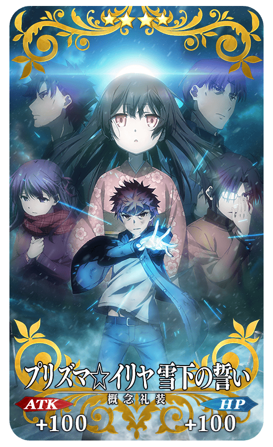
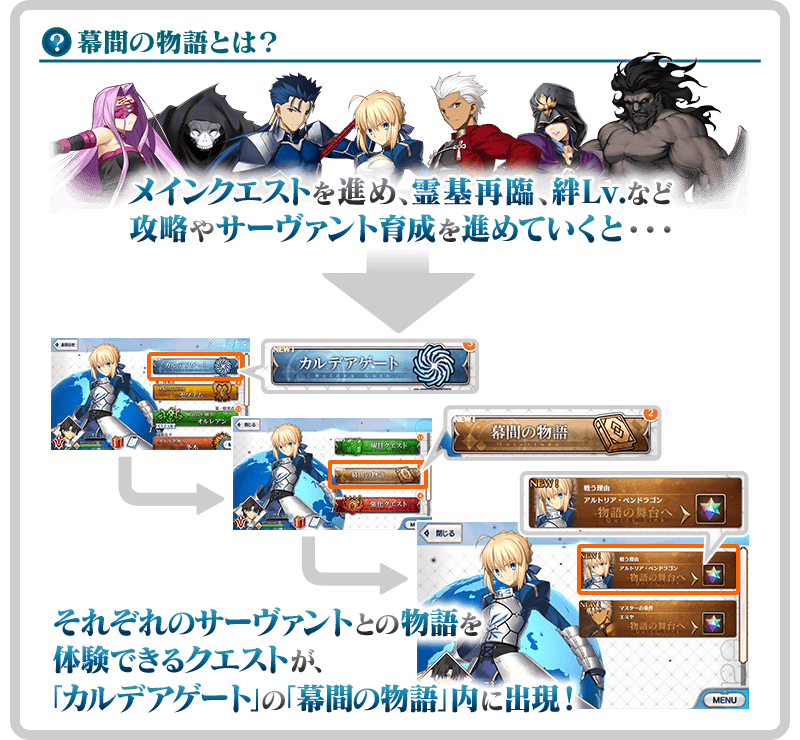
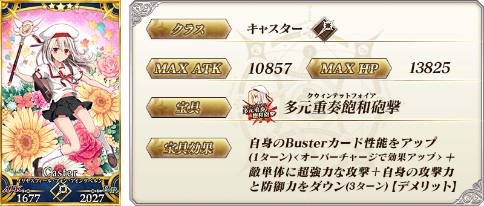
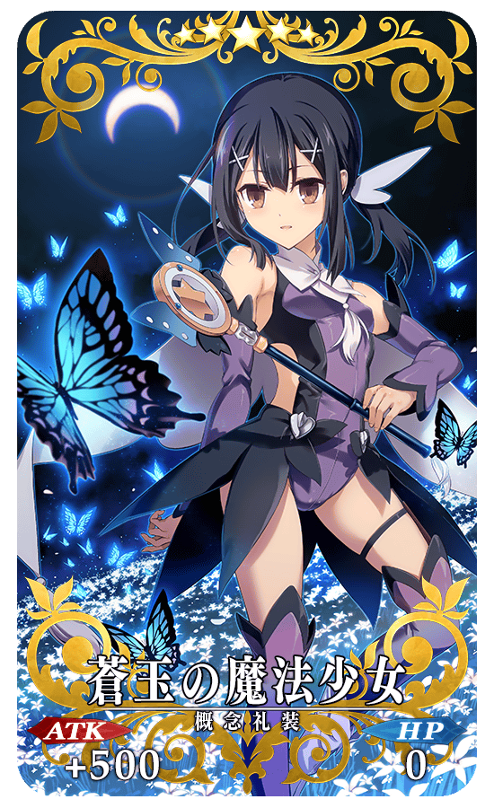
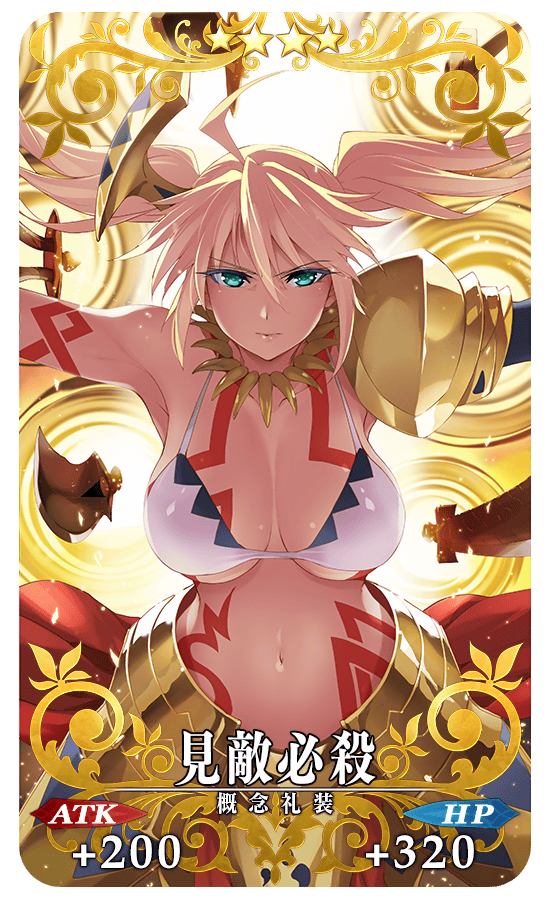
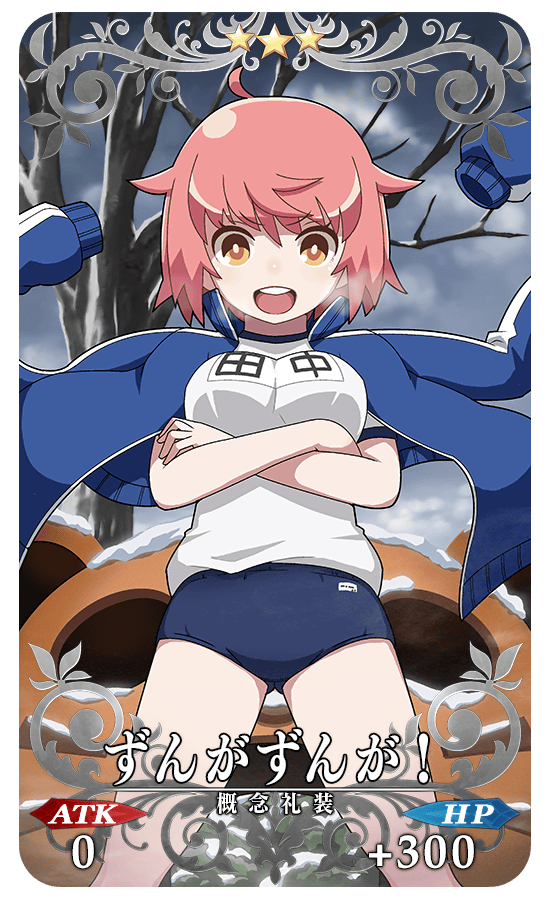
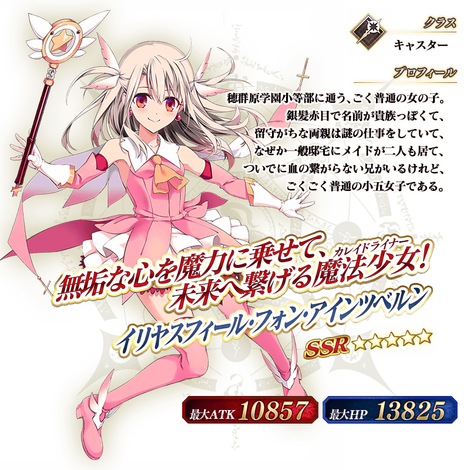

2017年8月25日(五) 17:00～9月8日(五) 11:59的期間，為了紀念「劇場版Fate/kaleid liner 魔法少女☆伊莉雅 雪下之誓」的公開，舉辦「劇場版Fate/kaleid liner 魔法少女☆伊莉雅 雪下之誓」公開記念宣傳活動！
◆舉辦期間◆
2017年8月25日(五) 17:00～9月8日(五) 11:59
在下述的期間中，4天內連續登入的話，做為特別報酬贈送叡智の猛火ALL★4(SR)合計25張！
◆舉辦期間◆
2017年8月26日(六) AM3:00～9月2日(六) AM2:59
| 連續登入日數 | 贈送內容 |
|---|---|
| 第1天 | 叡智の猛火ALL★4(SR) 2張 |
| 第2天 | 叡智の猛火ALL★4(SR) 3張 |
| 第3天 | 叡智の猛火ALL★4(SR) 4張 |
| 第4天 | 叡智の猛火ALL★4(SR) 16張 |
※第1天的登入獎勵是從8月26日(六) AM3:00配發。
※之後的登入獎勵會在AM3:00配發。
※連續登入天數中斷的話，無法領取之後的禮物。
※最多可領取4次，但根據開始遊戲的時間點，可能無法到此上限。
迦勒底之門中，通過在下述的期間中出現的「劇場版Fate/kaleid liner 魔法少女☆伊莉雅 雪下之誓」公開記念關卡，拿到關卡限定的概念禮裝吧！
※請注意在「劇場版Fate/kaleid liner 魔法少女☆伊莉雅 雪下之誓」公開記念關卡並無劇本。
◆舉辦期間◆
2017年8月25日(五) 17:00～9月8日(五) 11:59
◆關卡開放條件◆
全部的Master都能参加
※新玩家想要可自由行動，必須推進直到通過「特異點F 炎上汙染都市 冬木 第3節」為止。
|  |
★★★★SR |
配合「劇場版Fate/kaleid liner 魔法少女☆伊莉雅 雪下之誓」公開記念宣傳活動，追加伊莉雅絲菲爾・馮・愛因茲貝倫與克洛伊・馮・愛因茲貝倫的幕間物語！
◆追加時間◆ 2017年8月25日(五) 17:00～
|
◆關卡通過報酬◆ |
 |
◆關卡通過報酬◆ |
※克洛伊・馮・愛因茲貝倫是做為在2016年9月8日(四) 18:00～9月21日(三) 12:59的期間舉辦的合作活動「魔法少女紀行 ～プリズマ・コーズ～」的報酬所配發的Servant。
請注意本宣傳活動的陣容未包含在同時舉辦的期間限定「劇場版魔法少女☆伊莉雅 雪下之誓」公開記念Pick Up召喚。

伊莉雅絲菲爾・馮・愛因茲貝倫及克洛伊・馮・愛因茲貝倫的幕間物語的AP消耗量以期間限定變成1/2。
◆舉辦期間◆ 2017年8月25日(五) 17:00～9月8日(五) 11:59

【「劇場版Fate/kaleid liner 魔法少女☆伊莉雅 雪下之誓」概要】
■公開日: 自2017年8月26日(六)公開
■官方網站: http://anime.prisma-illya.jp/movie/sekka/
■官方推特: @prisma_illya
◆「劇場版魔法少女☆伊莉雅 雪下之誓」公開記念Pick Up召喚期間◆
期間:2017年8月25日(五) 17:00～9月8日(五) 11:59
以期間限定舉辦「劇場版魔法少女☆伊莉雅 雪下之誓」公開記念Pick Up召喚！
為了紀念「劇場版Fate/kaleid liner 魔法少女☆伊莉雅 雪下之誓」的公開，「★5(SSR)伊莉雅絲菲爾・馮・愛因茲貝倫」以期間限定Pick Up！
另外，期間限定概念禮裝「★5(SSR)蒼玉の魔法少女」「★4(SR)見敵必殺」「★3(R)ずんがずんが！」也Pick Up！
※「★3(R)ずんがずんが！」在Pick Up期間中，也能在友情點數召喚獲得。
詳情請在聖晶石召喚畫面左下的召喚詳細確認。
※伊莉雅絲菲爾・馮・愛因茲貝倫在Pick Up召喚期間結束後，不會追加到故事召喚。
Pick Up期間中，期間限定Servant、期間限定概念禮裝的出現機率提升！
10次召喚中確定1張★4(SR)以上和確定1位★3(R)以上的Servant！
※確定★4(SR)以上包含Servant和概念禮裝。
※所謂「出現機率提升」意指比同稀有度的Servant及概念禮裝出現機率更高的設定。
※克洛伊・馮・愛因茲貝倫是做為在2016年9月8日(四) 18:00～9月21日(三) 12:59的期間舉辦的合作活動「魔法少女紀行 ～プリズマ・コーズ～」的報酬所配發的Servant。
請注意並未包含在期間限定「劇場版魔法少女☆伊莉雅 雪下之誓」公開記念Pick Up召喚的陣容。
紹介伊莉雅絲菲爾・馮・愛因茲貝倫的寶具演出！
在Fate/Grand Order官方網站內的公告中，公開了「★5(SSR)伊莉雅絲菲爾・馮・愛因茲貝倫」的寶具演出。敬請確認。


|  |
★★★★★SSR |
|  |
★★★★SR |
|  |
★★★R |
